| |
Body Tapering |
| <<< Face Tapering | Chapters | Patching >>> |
This chapter describes how PK_BODY_taper provides functionality to apply tapering to a solid body, making it particularly easy to design parted molds.
In body tapering, a parting body (usually a sheet) is used to indicate a division in the body to be tapered. When designing molds, the parting body represents the division between the two halves of the mold. Two general tapering operations are possible with PK_BODY_taper:
Examples of both body tapering operations are shown in Figure 68-1.
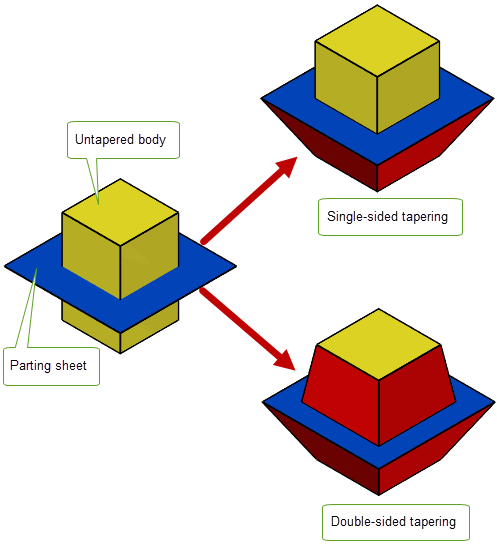Figure 68-1 Single-sided and double-sided tapering
For double-sided tapering, PK_BODY_taper also provides support for mitering, whereby material is added to the tapered body such that tapered faces in the resulting body meet at the parting sheet.
Figure 68-2 shows, in cross-section, a double-sided taper of a block with an intersecting parting body. In order to be able to draw the block from the mold, only some parts of the block need to be tapered ( Figure 68-2(a)). However, additional material must also be added ( Figure 68-2(b)) in order to ensure that the tapered faces meet at the parting body.
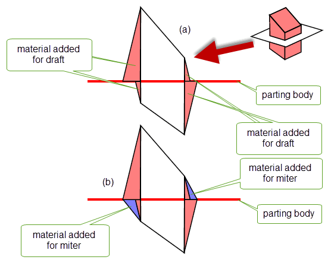Figure 68-2 Mitering a block so that tapered surfaces meet
For an example of this functionality, see the code example in the
C++\Code Examples\Modelling\LOP\Body
Taper
folder, located in
example_applications
in your Parasolid installation folder.
|
Note: This functionality does not support facet geometry. |
In order to perform body tapering, you need to specify the following:
|
|
|
A body that is used to indicate a division in the body to be tapered. See Section 68.2.1, “Specifying a parting body” for more information. |
|
A list of reference entities above the parting body. See Section 68.2.2, “Specifying reference entities and taper angles” for more information. |
|
|
A list of reference entities below the parting body. See Section 68.2.2, “Specifying reference entities and taper angles” for more information. |
|
|
The taper angle above and below the parting body, respectively. See Section 68.2.2, “Specifying reference entities and taper angles” for more information. |
|
|
|
|
A set of options that control the result of the tapering operation. See Section 68.3, “Summary of PK_BODY_taper options” for more information. |
The
parting_body
is used to indicate a division of the original body into halves “above” and “below” where it intersects the parting body, with respect to the draw direction, as shown in
Figure 68-3. You can supply any solid or sheet body as the
parting_body
in a double-sided or single-sided taper so long as the body does not have through holes. The supplied
parting_body
must:
You need to supply reference entities and taper angles appropriate to either a double- or a single-sided taper, as discussed in Section 68.2.2, “Specifying reference entities and taper angles”.
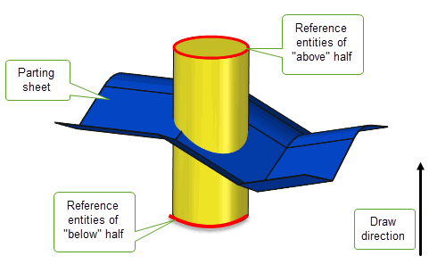Figure 68-3 Dividing the original body in halves “above” and “below” the parting body
If you use a solid parting body, the tapered body unites the parting body after the tapering operation, as shown in as shown in Figure 68-4
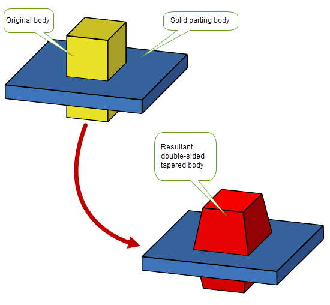Figure 68-4 Specifying a solid parting body
You can specify that the body itself be used as the parting body, for either single-singled (a) or double-sided (b) tapering. This is illustrated in Figure 68-5 where the isocline curves have been generated using PK_FACE_imprint_cus_isoclin as described in Section 67.1, “Introduction”.
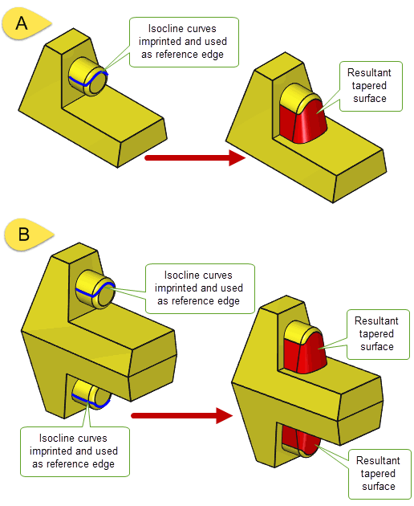Figure 68-5 Single-and double-sided tapering using the body itself as the parting body
You need to supply a list of reference entities and a taper angle when you are tapering a body. The techniques that you use to create reference entities in face tapering operations can be used for body tapering. See Section 67.1.3, “Reference entities” for more information.
If you choose to taper the half that is above the
parting_body
you need to supply
refs_above
and
angle_above
. If you choose to taper the half that is below the
parting_body
you need to supply
refs_below
and
angle_below
. If you choose to taper both above and below the
parting_body,
you need to supply information to all four of these options.
The reference entities supplied must be edges on the body to be tapered, with the following constraints:
refs_above
,
angle_above
.
refs_below
and
angle_below
miter_at_parting
is set to PK_LOGICAL_true
miter_type
is set to PK_taper_miter_to_face_cThe reference entities you supply can be connected or unconnected. A sequence of one or more connected reference entities is often called a chain of reference entities.
Figure 68-6 -Multiple interacting reference edges
The effect of double-sided tapering on a body not only depends on the reference entities you supply, but also on whether you miter the taper so that the tapered faces meet at the parting body. Figure 68-7, shows the different effects that you can achieve by tapering a block, and specifying reference edges on both sides of the parting body. See Section 68.4, “MiteringDOC2011”, for information on how you miter the taper.
|
Note: The reference entities supplied to PK_BODY_taper are preserved during the operation, but can be split and deleted when mitering in a double-sided taper operation. |
Figure 68-7 The effect of different reference entities and mitering on a body
If you choose to use isocline curves as reference edges, there may be times when the edge is self-shadowing (ie. casts a shadow on itself). In these cases, PK_BODY_taper returns PK_local_status_self_shadowing_c in the returned
status
, and the self-shadowing reference edges in the returned
error_entities
. You can identify the self-shadowing parts of the isocline curves by splitting them at points where the draw convexity changes using the
isocline_split
option in PK_FACE_imprint_cus_isoclin.
The draw convexity is the convexity of the face in the cross-sectional plane defined by the surface normal and the draw direction. At points where the draw convexity is concave the taper surface cuts into the body being tapered and creates self-shadowing reference edges.
PK_BODY_taper takes a set of options in PK_BODY_taper_o_t. The available options are as follows:
Option |
|
|---|---|
tolerance |
|
miter_at_parting |
Whether to create miter faces to ensure that taper surfaces meet at the parting body. See Section 68.4.1, “Specifying miter information” for more information. |
miter_type |
The method to use when creating miter faces. See Section 68.4.1, “Specifying miter information” for more information. Default: PK_taper_miter_on_ref_c. Note: When
miter_type
is PK_taper_miter_to_face_c,
non_miter_edges
cannot be supplied. |
non_miter_edges n_non_miter_edges |
An array of reference edges on which taper faces should be constructed as if
miter_type
is PK_taper_miter_to_face_c,
non_miter_edges
cannot be supplied. |
merge_face |
Whether tapered faces should be merged with their neighbours. |
check_fa_fa |
Whether to check for face-face inconsistencies. Default: PK_check_fa_fa_yes_c. |
default_method |
Default taper method to use on reference entities not specified in Default: PK_taper_method_isocline_c. |
n_methods |
Number of reference entities that do not use the specified |
methods |
An array containing tapering methods to use on reference entities instead of the specified |
method_refs |
An array of reference entities for which the |
corner_type |
How the gap between adjacent taper faces is filled. See Section 68.5, “Tapering sharp cornersDOC0914” for details. |
parting_edges n_parting_edges |
An array of all the edges of the body to be tapered that lie on the parting body, together with the number of those edges. See Section 68.6, “Improving performance by specifying parting edges” for more information. |
replace_edges n_replace_edges |
An array of non-reference edges (together with the number of those edges) that can be replaced by the body taper operation, in order to allow adjacent faces to be extended to meet the taper faces. See Section 68.7, “Improving results by modifying the list of reference edgesDOC0981” for more information. |
undercut |
What action to take when undercut is detected. See Section 68.8, “Enabling undercut” for more information. Default: PK_taper_undercut_ref_no_c. |
upper_faces n_upper_faces |
An array of faces (together with the number of faces) from whose upper bounds reference edges are calculated for the body taper. See Section 68.9, “Calculating virtual reference edges from bound faces”, for more information. |
lower_faces n_lower_faces |
An array of faces (together with the number of faces) from whose lower bounds reference edges are calculated for the body taper. See Section 68.9, “Calculating virtual reference edges from bound faces”, for more information. |
concave_type |
Which method to use when repairing miter at concave corners. See Section 68.4.3, “Repairing concave miter corners”, for more information. |
concave_radius |
The radius of the blend surface that is used to repair miter at concave corners at the point where it intersects the parting body. This option only has an effect if |
keep_material |
Whether to keep regions of material lying between the reference entities and the parting body that would protrude from the tapered faces. See Section 68.10, “Keeping protruding material” for more information. Default: PK_taper_keep_material_no_c. |
update |
Update switch to maintain consistency when rebuilding models built in older versions of Parasolid. See Section 63.5.2, “Update control”, for more information. Default: PK_local_ops_update_default_c. |
Note: When using the default method for PK_BODY_taper, it is recommended that you imprint the isocline curves using PK_FACE_imprint_cus_isoclin with the
isocline_split
option set to PK_isocline_split_convexity_c. This ensures that isoclines will be split at the points where the draw convexity changes, thereby creating better quality reference edges. For more information, see Section 68.2.2.1, “References edges and draw convexity”. |
PK_BODY_taper provides support for mitering. When mitering, material is added to the tapered body so that tapered faces in the resulting body meet at the parting body. This section describes how to specify or suppress mitering information and how to repair concave corners created from mitering.
PK_BODY_taper lets you choose whether or not to add additional material to ensure that each edge created on the parting sheet is shared by two tapered faces. Miter faces ensure that the tapered surfaces added to the body above and below the parting body actually meet at a common edge on the parting body, as shown in Figure 68-2.
PK_BODY_taper also lets you control how those miter faces are created using the
miter_type
option:
Note: When using PK_taper_miter_to_face_c,
non_miter_edges
cannot be supplied. See Section 68.4.2, “Suppressing mitering information”, for more information on
non_miter_edges
. |
Figure 68-8 shows the difference between the “On ref” and “To face” methods, using a sphere as an example.
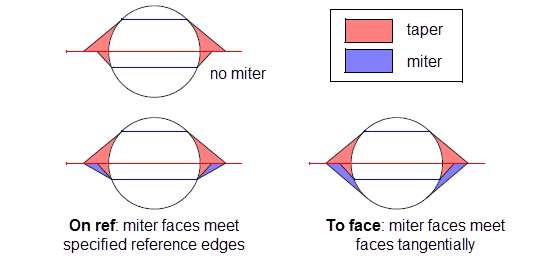Figure 68-8 Different methods for creating a mitered effect
Miter faces are bound by reference edges where possible, but in any open parts of the chain of reference edges, the miter face is made tangent to the face that meets the parting body. Figure 68-9 shows a cylinder in which this combination of methods is used. In order to ensure that tapered faces meet at the parting body, miter faces need to be applied above the parting body where the reference edges do not form a complete chain. The non-mitered version of this body is also shown for comparison.
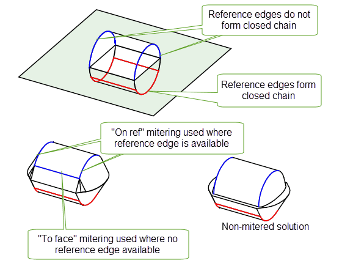Figure 68-9 Combining “On ref” and “To face” mitering
|
Note: Mitering is not possible if you use a solid parting body.It is only supported when supplying a sheet parting body. |
If you have specified miter information, as described in Section 68.4.1, then you can also choose to suppress mitering along certain reference edges using the
non_miter_edges
option. The taper faces along these reference edges are created as if no miter information had been specified, thus creating a non-mitered solution along those edges, while retaining a mitered solution along the remaining reference edges.
In Figure 68-10, the taper faces above the parting body all require mitering in order to meet the taper faces below the parting body. By specifying that one of these reference edges should be non-mitered, you can suppress the mitering effect on just that taper face, as shown.
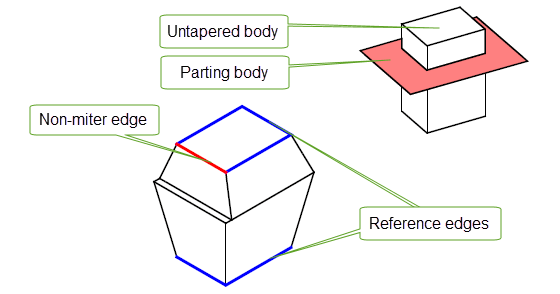Figure 68-10 Suppressing miter information along some reference edges
Parasolid creates a triangular side face in cases where there is a shallow angle between a non-mitered edge and a mitered edge, as shown in Figure 68-11

Figure 68-11 Creating side faces between mitered and non-mitered edges
Sometimes, adding miter information creates concave corners in the resulting body that at best are undesirable, and at worst can prevent the taper operation from completing successfully. Parasolid automatically repairs these concave corners and, in addition, gives you control over the method used to smooth the repair using the
concave_type
option along with an associated
concave_radius
.
Figure 68-12 shows a sloping cylinder (and a parting body) together with the body that results from applying a non-mitered double-sided taper to it. The regions that cause concave corners requiring repair during the miter process are indicated.
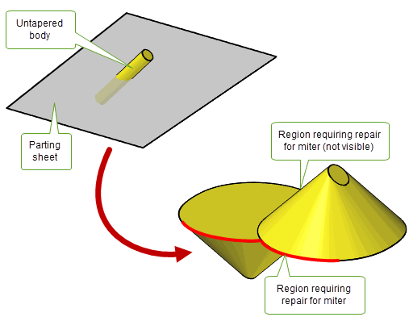Figure 68-12 Concave corners requiring repair in order to add miter information
The
concave_type
option has the following values:
Figure 68-13 illustrates the results of applying these values to the tapered body in Figure 68-12. The resulting body produced by each smoothing method is shown on the left of the figure. On the right of the figure is a schematic that illustrates the cross-section of the repaired region with the parting body for that method. In each case, the cross-section of the unmitered solution is also shown for comparison.
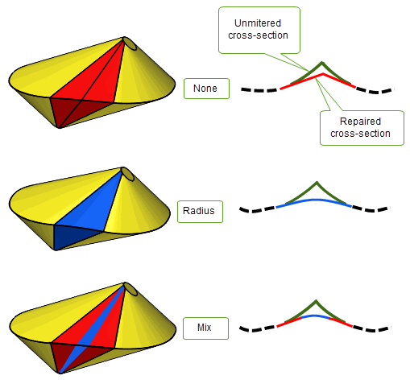Figure 68-13 The effect of different types of concave corner repair
When you specify adjacent edges as reference edges, you can choose how to fill any gaps that are created in the corners between the resulting adjacent tapered faces using the
corner_type
option. This takes the following values:
|
Extend the surfaces of the adjacent taper faces until they intersect. This is the default. |
|
These are illustrated in Figure 68-14.
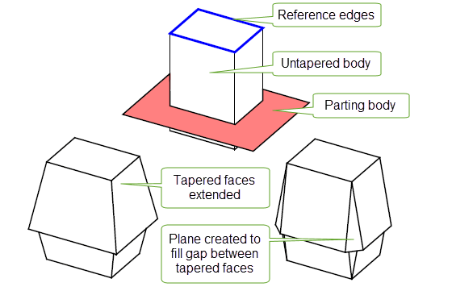Figure 68-14 Different methods of filling the gap between adjacent taper faces
You can improve the performance of body tapering by supplying an array of parting edges that describe where the parting body intersects the body to be tapered. Use PK_BODY_imprint_bodies to create this list, and supply it in
parting_edges
to improve performance of the subsequent taper operation.
Figure 68-15 Specifying an array of parting edges to improve performance
Sometimes you may not get the result you want by supplying all of the edges in a chain as reference edges. Parasolid lets you supply some of those edges as
replace_edges
rather than as reference edges. Edges supplied as
replace_edges
are not used to generate tapered surfaces, producing an improved result. This is illustrated in
Figure 68-16 where (a) shows the result of a body taper where all the edges above the parting body are supplied as reference edges, and (b) shows the result when some of the edges are supplied as reference edges and some are supplied as replace edges.
Note: Edges supplied as
replace_edges
cannot be supplied as reference edges. |
Figure 68-16 Specifying
replace_edges
so that adjacent faces can be extended to meet taper faces
In some cases, material needs to be removed from some parts of a body, in order for body tapering to succeed. In tapering this is referred to as undercut and is illustrated in Figure 68-17.
To enable undercut, use the
undercut
option, which takes the following values:
|
Attempt to remove the undercut and proceed with the taper operation. |
Figure 68-17 Undercut in single-sided body tapering
If a body to be tapered does not contain suitable reference edges you can specify a set of faces from which Parasolid determines suitable virtual reference edges. This can happen when a suitable edge doesn’t exist, or where an edge is available but its curve contains a section that is deemed too steep for tapering. To specify a set of faces, you use either the
upper_faces
or
lower_faces
option (or both if you are doing a double-taper operation). These will specify a set of faces above (
upper_faces
) or below (
lower_faces
) the parting body using upper and lower bounds respectively. This is illustrated in
Figure 68-18.
Figure 68-18 Calculating virtual reference edges from the upper or lower bounds of faces
When determining virtual reference edges from upper or lower bounds, Parasolid can determine different sets of upper or lower edges that are local to each set of adjacent bound faces. For example, Figure 68-19 shows a body for which two sets of local upper and lower virtual reference edges have been determined, based on the two sets of adjacent bound faces in the body to be tapered.
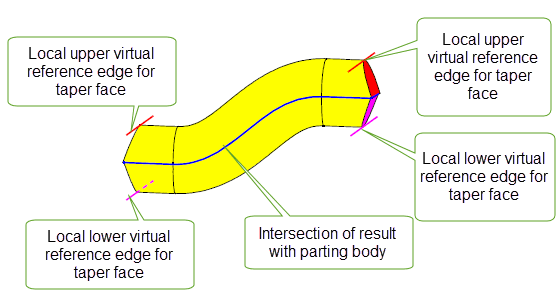Figure 68-19 Local virtual reference edges for different sets of adjacent bound faces
By default, PK_BODY_taper will remove faces and edges of the body that are "between" the reference entities and the parting sheet and replace them with the tapered faces. In cases where portions of the body would protrude from the tapered faces, this is not always desirable. The keep_material option allows you to keep these portions of the body if you choose; it takes the following values:
Figure 68-20 Effects of the keep_material option: retaining material
Figure 68-20 shows an example where the effect of PK_taper_keep_material_yes_c is to ensure the faces of the original body are united with the newly created taper faces to create a result that retains the extra material.
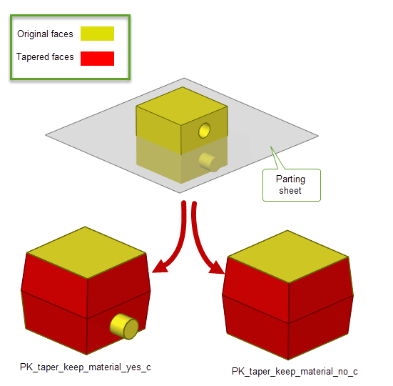Figure 68-21 Effects of the keep_material option: retaining protruding features
In Figure 68-21, the effect of PK_taper_keep_material_yes_c is to keep the protruding features of the original body; the hole on the original body is removed in both cases. This example illustrates how the value of keep_material only affects protruding material; interior features such as holes are never kept.
| <<< Face Tapering | Chapters | Patching >>> |